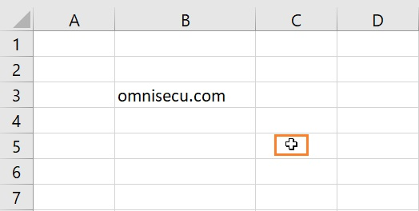
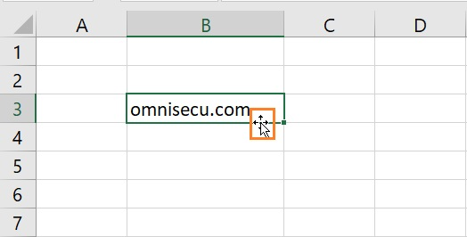
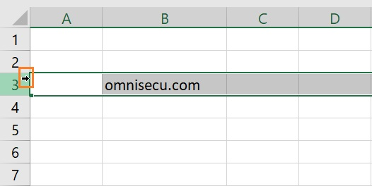
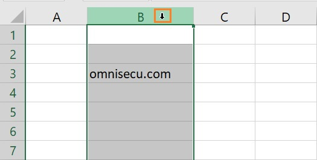
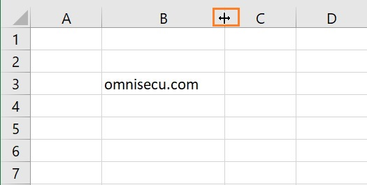
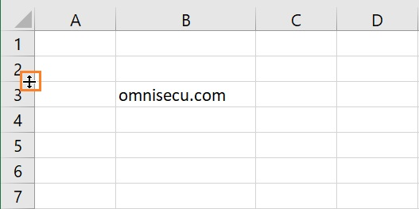
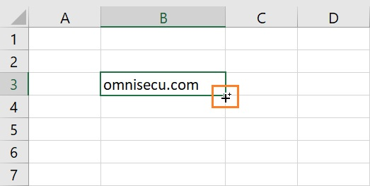

Ebben a dokumentumban megismerkedünk az Ofice táblázatkezelő programjának, az Excelnek az alapjaival. Ha már foglalkoztál vele és csak átismételnéd, akkor haladhatsz gyorsabban a haladóknak szóló részekkel!
Egy kis segítség: ha így formázott részt látsz, arra rákattintva extra magyarázat vagy kép jelenik meg.
Nyisd meg a programot és válaszd az üres munkafüzet lehetőséget! Ebből már tudod is az egyik alapfogalmat: a fájlt, amibe dolgozunk, Munkafüzetnek hívjuk.
A munkafüzeteken belül készíthetünk több lapot. Excelben ezeket az ablak alján lehet állítani, a bal oldalon. Egy-egy ilyen lapot Munkalapnak hívunk.
A munkalapokat sok-sok cella alkotja. Ezekbe lehet beírni az adatokat és a képleteket. A cellák oszlopokba és sorokba rendeződnek. Az oszlopokat (alapbeállítás szerint) betűvel (vagy betűkkel), a sorokat pedig számokkal jelöljük. Egy cellára mindig BetűSzám formában hivatkozhatunk. Tehát, ha a bal felső sarokban levő celláról szeretnék beszélni, akkor azt mondhatom, hogy az A1 cella, az alatta levőnél pedig, hogy az A2 cella stb.
A munkalapokon tudsz egérrel és billentyűzettel is navigálni. Egérrel kattintva és a görgővel is dolgozhatsz; az egérmutatók jelentését a következő pontban látod. A nyílbillentyűkkel értelem szerint lehet navigálni a munkalapon. Ha a Shift gombo nyomva tartod, akkor több egymással összeérő cellát jelölhetsz ki téglalapalakban. Ha nyomba tartod a ctrl gombot és úgy nyomod meg az egyik nyilat, akkor a kijelölés a legutolsó/legelső olyan cellába ugrik, amelyikben van adat. Ha nincs ilyen, akkor a táblázat legelejére vagy legvégére ugrik. Nem kell tehát percekig nyomni a lefelé nyilat, ctrl + ↓-lal rögtön megnézheted, hogy meddig tart a munkalap.
Excelben nagyon fontos tudni, hogy melyik egérmutató mit csinál, mert minden kattintás mást és mást csinálhat eszerint.







A legegyszerűbb, hogy írhatsz be szöveget és számot. A program a formázással alapbeállítás szerint jelzi, hogy szöveges vagy számos adat van-e az adott cellában: a számokat mindig jobbra igazítva jeleníti meg, a szöveget balra.
Nem kell minden adatot kézzel beírni, pont ez a lényeg. Írd be az A1 cellába, hogy alma! Nyomj entert, majd menj vissza erre a cellára! A fekete kereszt alakú egérmutatóval terjeszd ki a tartalmát lefelé, kb. 5-10 cellába!
Ugyanezt számokkal is meg lehet csinálni. Írd be a B1-es cellába, hogy 15, majd nyomj entert és terjeszd ki ezt is lefelé néhány sornyit!
Ennél azért tud izgalmasabb és hasznosabb dolgokat is a program, most már egy ilyen következik. Írd be a C1 cellába, hogy 1, a C2-be (alá) pedig, hogy 3! Jelöld ki a 3-ast és terjeszd ki lefelé! Most, hogy már láttad, hogy hogyan nem működik, nézzük meg, hogyan működik! Jelöld ki a C1 és C2 cellákat együtt! Így menj a kijelölés jobb alsó sarkába, és a fekete kereszt alakú egérmutatóval terjeszd ki a beírtakat! Ha jól csináltad, a páratlan számokat kell látnod egymás alatt 1-től kezdődően.
Ami most történt, az az, hogy megmutattunk az Excelnek, hogy milyen szabályt szeretnénk alkalmazni, majd eszerint kiterjesztettük a kijelölés tartalmát, a többi cellára is alkalmaztuk azt a szabályt. Az elején, amikor csak a 3-as volt kijelölve, akkor a megmutatott "szabály" csak annyi volt, hogy "3", ezért egyszerűen telepakolta 3-asokkal a kiterjesztést. De amikor két cellát jelöltünk ki, akkor már ennek a kettőnek a tartalmát mutattuk meg a programnak, és egy számtani sorozatot kaptunk!
Excelben, amikor valami idővel kapcsolatos dolgot írunk be egy cellába, azt automatikusan folytatólagosan terjeszti ki, akkor is, ha nem adunk meg külön szabályt hozzá. Írd be az A5 cellába, hogy hétfő, majd jelöld ki, és terjeszd ki felfelé! Most terjeszd ki lefelé! Most így, hogy még mindig ki van jelölve a teljes kiterjesztés, húzd felfelé a kiterjesztő egérmutatót!
Mi történt? A kiterjesztés felfelé is működik, ezt érdemes megjegyezni, mert segíthet később. A másik, hogy itt valóban elég volt egy adatot megadni. A harmadik pedig, hogy a kiterjesztést vissza is lehet vonni.
Most írd be a B15-ös cellába, hogy 10:00! Nyomj entert (vagy Tab-ot), jelöld ki és terjeszd ki jobbra! Látod? Nem csak lefelé és felfelé, hanem jobbra és balra is működik a kiterjesztés! Most, hogy még ki van jelölve több cella ugyanabban a sorban, terjeszd ki lefelé! Így egy egész nagy tömböt hozhatsz létre egy szabály szerint – lesz, amikor ezt is hasznosítani fogjuk.
Végül írd be a B1-es cellába, hogy 1. feladat! Jelöld ki és terjeszd ki lefelé! Amikor egy szöveges adat elején vagy végén szám van, kiterjesztéskor a program automatikusan továbblépteti a számozást.
Az adatok kiterjesztésénél már láttunk bizonyos mértékű gondolkodást, hiszen egy szabály alapján is kitölthettünk cellákat. Most még konkrétabban, még egyértelműbben utasítva fogjuk a programnak azt mondani, hogy gondolkodjon.
Írd most be a D1 cellába, hogy 3+4! Ha entert nyomsz, egyszerűen megjelenik, hogy "3+4". Most lépj vissza, és írj elé egy egyenlőségjelet! Figyeld meg! ha simán beírsz valamit egy olyan cellába, ahol már van valamilyen tartalom, azt felülírja a program! Ha nem szeretnéd, hogy eltűnjön, ami eddig volt benne, Esc-pel kiléphetsz a cella szerkesztéséből. F2 gombbal, dupla kattintással vagy a szerkesztőlécben kattintással tudod megnyitni a cella tartalmát szerkesztésre. Ekkor ellépegethetsz a cellatartalom elejére és beírhatod az egyenlőségjelet az elejére.
Most jelöld ki a D2-től a D5-ig a cellákat! Írd be, hogy =5-6, majd nyomj Entert!
A legelső cellában megjelenik az eredmény, de a többi üres marad! A fehér kijelölés lejjebb megy a teljes kijelölésen belül. Most (továbbra is anélkül, hogy kattintanál) írd be, hogy =3*5, és nyomj ctrl + Entert! (Vagyis ugye nyomva tartod a ctrl-t és megnyomod az Entert.) Mi történt? A teljes kijelölésben (ott is, ahol az előbb már bekerült a -1) ez az új eredmény jelent meg. Ez is nagyon hasznos tud lenni!
Végül a D6-os cellába írd be, hogy =5/2! Ezzel végignéztük az összes matematikai alapműveletet.
Az excel gondolkodása nem csak a számolásban nyilvánul meg, hanem pl. abban is, ahogy felhasználhat máshol megadott adatokat. Most ennek nézzük meg a részleteit.
Írd be a D6-os cellába, hogy =A1! Enter után a cellában ugyanaz jelenik meg, mint ami az A1-es cellában van.
Írd most át az A1-es cella tartalmát, és figyeld meg, hogy az Enter megnyomása után a D6 tartalma is megváltozik!
Most jelöld ki a D6-os és a D7-es cellát! A kijelölést terjeszd ki lefelé kb. 10-15 sort!
A kiterjesztésben minden második cellában megjeleik az, ami az A oszlop páros celláiban van, köztük végig egy-egy üres cella található. Kattints az egyik értéket tartalmazó (tehát nem üres) cellára! Mit veszel észre?
A szerkesztőlécben, vagyis a képernyő tetején, a menük alatt látod, hogy milyen képlet szerepel a cellában – tehát nem csak a számolás utáni eredményt, hanem a mögötte lévő képletet nézheted meg! Vedd észre, hogy itt másik cellahivatkozás van, mint amit eredetileg beírtál! Erre később még visszatérünk. Azt is észreveheted, hogy ha elég sokáig terjesztetted ki a képletet, akkor idővel 0-k is megjelennek. Ha üres cellára hivatkozom, azt 0-nak veszi a program.
Az eddigieket önmagukban ritkán használjuk. Komplex formában viszont gyakran előfordulnak.
Most az E oszlopban fogunk dolgozni, a C oszlopban szereplő páratlan számokkal. Számold ki az E1-es cellába a C1-es cella 3,5-szörösét!
Ehhez írd be, hogy =a1*3,5! Vedd észre! Az Excelben nem számít, hogy kis- vagy nagybetűt írunk-e. Az Excel (a majd később látott programozással ellentétben) magyar beállítás szerint tizedesvesszőt használ.
Ha megvan az eredmény, akkor ezt a képletet szeretnénk a C oszlop valamennyi adatára alkalmazni. (Ez a mondat másképp: a C oszlop minden adatára szeretnénk alkalmazni. Ezt a megfogalmazást gyakran használják pl. felvételiben vagy érettségi feladatoknál.) A fekete kereszt alakú egérmutatóval olyat is csinálhatok, hogy a kijelölés kézi kiterjesztése helyett duplán kattintok a kijelölés jobb alsó sarkában. Ekkor a program automatikusan kiterjeszti addig, amíg vannak adatok a hivatkozott oszlopban.
Egy példát írtam, de bármilyen műveletet végezhetek számokkal és cellahivatkozásokkal is – már amennyiben a hivatkozott cella számokat tartalmaz (vagy visszavezethető arra, pl. van benne egy számolás, ami a végén ad egy számot).
Most írj be az F1-es cellába csak egy egyenlőségjelet, aztán kattints az A1-es cellára, és jelöld ki folyamtosan nyomva tartott egérgombbal az A1-estől a C5-ösig az egészet! Nyomj Entert, és láthatod: 15 cellába kerülnek adatok! A Szerkesztőlécben most a beírt képletet látod, de szürkén, a 15 celládat pedig kék vonal szegélyezi. És persze azt látod magukban a cellákban, ami az A és C oszlopok közt van. Hogyan jelöli a program az intervallumot? Az első és az utolsó cella közé tett kettősponttal. Ezért fontos, hogy az osztást perjellel jelöljük.
Most írj be valamit a G1-es cellába! Mi történik? A program hibát dob, mert nem tudja kibontani az intervallumot! Az intervallumra való hivatkozás gyengébb, mint a direkt beírt adatok, erre mindig figyelni kell, ha ilyen intervallumot használsz!
Gyakran előfordul, hogy sok értéket ugyanazzal a néhánnyal kell megszorozni. Tegyük fel, hogy osztály elmegy egy cukrászdába, és mindenki vesz valamennyi sütit. Ha felírjuk, hogy ki mennyit vett, akkor ezeket tehetjük egy oszlopba, egymás alá. Ha ki szeretném számolni, hogy ki mennyit fizetett, akkor azzal kell megszorozni. Ha az iskola ez után vissza tudja igényelni az ár egy részét, akkor érdemes cellahivatkozásokat használni.
Írd be a H1-es cellába, hogy 365! Az I1-esbe írd be, hogy =c1*i1! Nyomj Entert! A program kiszámolja az eredményt – ez nem új. Most terjeszd ki lefelé kicsit a képletet! Mit tapasztalsz? Alatta már csak 0-k szerepelnek! Miért? Nézd meg a Szerkesztőlécben! A másodikban már a H2-vel számol – de ez már üres!
Ezt nevezzük relatív hivatkozásnak. Amikor beírom az I1-be, hogy H1, akkor valójában nem azt mondtam a programnak, hogy a H1-essel számoljon, hanem, hogy a bal szomszédjával. Amikor kiterjesztem a képletet, akkor ezt jegyzi meg, és mindig a saját szomszédjával (illetve a megfelelő távolságban levő cellával) számol.
Ha fixálni szeretném a hivatkozást, tehát tényleg a H1-es értékre van szükségem mindig, akkor ezt jeleznem kell. Kattints duplán az I1-esre, és jelöld ki a képletben az H1-et (elég csak belekattintani is)! Nyomd meg az F4-et! A program erre két dollárjelet tesz, egyet a betű, egyet a szám elé. Ez mondja a programnak, hogy fixen, mindig az adott sorral és az adott oszloppal számoljon abban a hivatkozással.
Sok összetettebb számolásra (és másokra is, de ezt majd később) használunk függvényeket. Ezek előre elkészített dolgok, amik csinálnak valamit. Most egy egyszerű függvényt próbálunk ki.
Írd be a J1-es cellába, hogy =max(c:c)! Ez az intervallum legnagyobb értékét fogja visszaadni. Természetesen csak számokon működik, ezért a C oszlopon alkalmazzuk.
A függvényeket Excelben mindig a nevükkel jelöljük, majd utána egy zárójel következik. A zárójelbe írjuk a függvény argumentumait – azokat, amiket a függvény felhasznál a számolásaihoz.
A rendszer az adatbankból minden alkalommal 10 véletlenszerű feladatot sorsol ki. A ⭐ csillaggal jelölt kérdések az alapkövetelményeket kérik számon, míg a 🌟 pluszpontos kérdésekkel extra pontokat lehet gyűjteni.